-
MRFM（磁共振力显微镜）
作用：可以测量材料的三维磁性结构
来源：https://wenku.baidu.com/view/5796f88f83d049649b665894.html
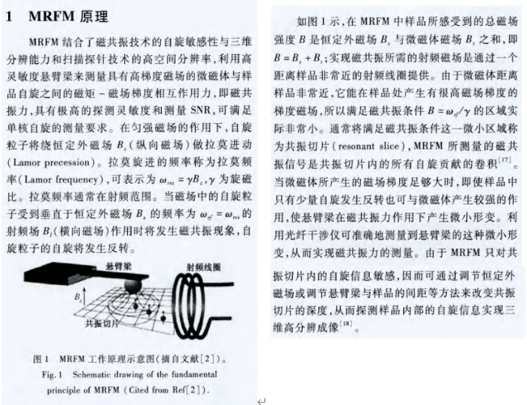
-
贝塞尔函数的现实背景
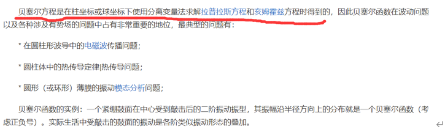
-
射频电磁场
交流电的频率达到10⁵Hz以上时，其周围就形成了高频率电场和磁场，即射频电磁场。
-
密度矩阵函数形式
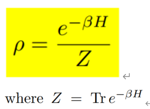
-
量子刘维尔方程
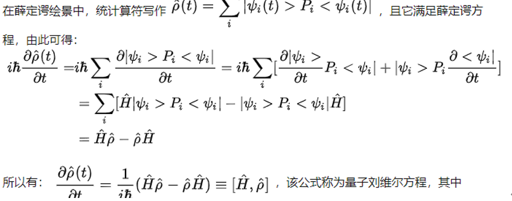
-
Brillouin light scattering (BLS)
Most of the experiments on nonlinear spin waves reported in the literature were made by means of microwave spectroscopy. The propagating spin waves are detected by a second microstrip antenna that is connected to a microwave detector. The receiving antenna integrates the spin wave intensity along its length, and, therefore, all the information about the transverse distribution of the intensity in the propagating spin wave packet is lost. The processes of formation and propagation of temporal spin wave envelope solitons in all these studies were treated in the past as essentially being one-dimensional.
Brillouin light scattering (BLS) is an optical spectroscopic method for investigation of excitations with frequencies in the GHz regime.
Advantages:
1. The potential to investigate spin waves with different absolute values and orientations of their wavevectors.
2. A wide dynamic range, i.e., the possibility to detect both low-amplitude thermal spin waves and high-amplitude spin waves, excited by an external microwave field.
3. High spatial resolution defined by the size of the laser beam focus, which is 30-50 μm in diameter, i.e., BLS provides a unique opportunity to investigate two-dimensional confinement effects.
Principle:
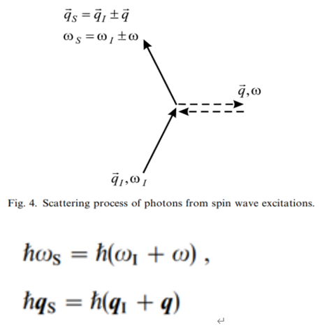
-
为什么相干态联系量子和经典自旋波图像
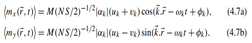
-
量子动力学方程的作用
控制着非平衡量子多体系统中关联函数的演化
-
Different types of spin waves within the energy-momentum space
At the very low momentum values, the dominating magnetic energy is the long-range dipolar interaction, hence the spin waves are called dipolar spin waves, which can be well-described by semi-classical models. For the large momentum values, the dominating magnetic energy is exchange energy, so the spin waves in this regime are called exchange spin waves, for which quantum mechanical description of the system is demanded.
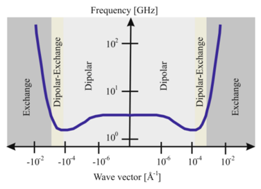
-
1eV对应的温度，波长
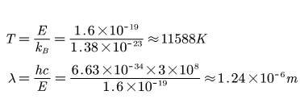
-
光激发极化自旋电流产生的方式
用圆偏振的激光束去照射GaAs阴极，出射的光电子自旋平行或反平行入射光束方向，一般的GaAs极化率可达到50%，将其生长在晶格失配的衬底上（即用应力调节），可达到90%的极化率。
-
自旋极化电子激发（湮灭）磁子的方式
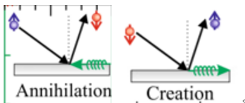
图中自旋向上是铁磁材料中多子，自旋向下为少子
-
1ml是1丝，1ml=0.01mm
-
Spin Seebeck effect in YIG
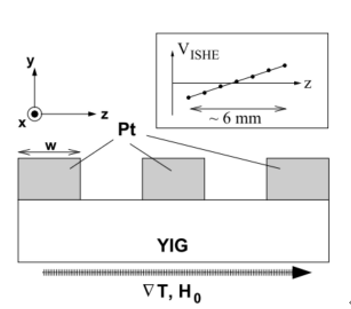
-
Two relevant processes to the Spin Seebeck effect
- Magnon-driven spin seebeck effect
-
Phonon-drag spin seebeck effect
-
电子受到声子散射
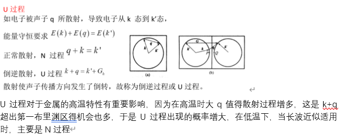
-
大部分声子热流是由声学支声子携带的
声学支声子对应晶格原子集体运动，而光学支声子对应晶格原子相对振动，相对更局域。
-
Dyson方程
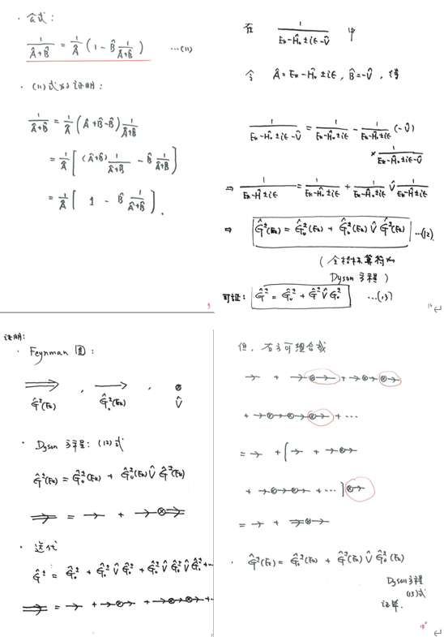
-
留数定理
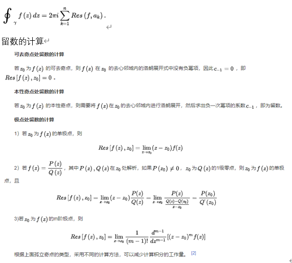
-
1的傅里叶变换的证明
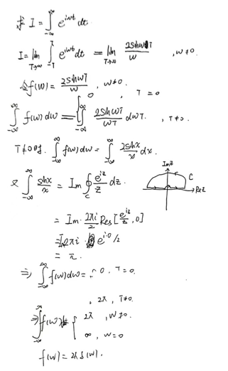